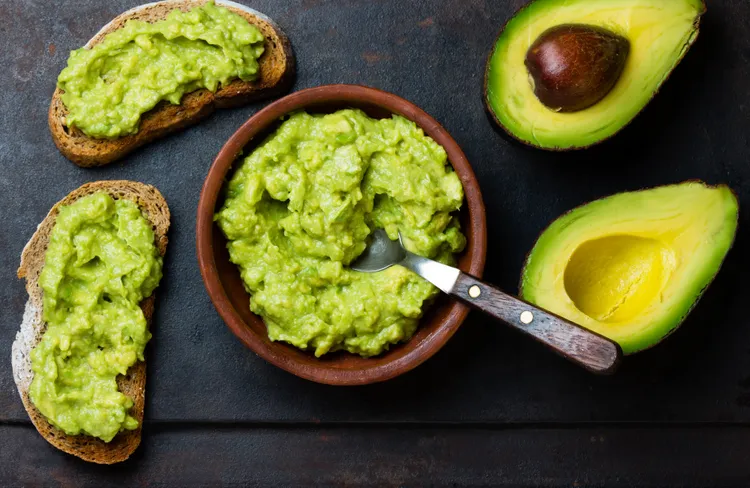

Healthy Foods That Are Easy to Overeat, According to a Dietitian
Seven nutrient-dense foods that carry a "health halo" — and how portion awareness can help you enjoy them without unintentionally consuming hundreds of extra calories a day.

Some of the most nutritious foods in your kitchen are also the easiest to overeat. Not because they are unhealthy — quite the opposite — but because their "health halo" can make us less mindful about how much we are actually consuming. A dietitian writing for Verywell Health identified seven common culprits.
1. Trail Mix and Mixed Nuts
Nuts are packed with healthy fats, protein, and fiber. But a single cup of mixed nuts contains roughly 800 calories. The handful you grab while walking through the kitchen can easily be 300-400 calories before you have even registered eating. Pre-portion into small bags or containers rather than eating straight from the bulk bin.
2. Avocado
A whole medium avocado provides about 240 calories and 22 grams of fat — healthy monounsaturated fat, but fat nonetheless. While avocado toast is a perfectly good breakfast, half an avocado is typically a reasonable serving. The whole fruit on your toast plus the other half scooped straight from the skin can add up fast.
3. Nut Butters
Two tablespoons of peanut butter — a standard serving — contains about 190 calories. But if you are scooping from the jar with a spoon, it is remarkably easy to eat double or triple that amount. Measure it out, at least until you have a reliable visual sense of what two tablespoons looks like.
4. Smoothies
A homemade smoothie can be a nutrient powerhouse — or a calorie bomb. Between the banana, the nut butter, the seeds, the protein powder, and the milk or yogurt, a single smoothie can easily exceed 500-600 calories. That is a meal replacement, not a snack. The dietitian recommended tracking ingredients at least once so you know what your usual blend actually contains.
5. Granola
Granola is essentially oats baked with oil and sugar. A quarter-cup serving — which looks tiny in a bowl — can contain 120-150 calories. Most people pour at least a cup onto their yogurt, adding 500+ calories before the yogurt itself is factored in.
6. Dried Fruit
Dried apricots, dates, mango, and raisins are concentrated sources of sugar because the water has been removed. A quarter-cup of dried apricots has about 100 calories and 20 grams of sugar — but eating them straight from the bag makes it easy to consume several servings. Pair with a protein source to slow sugar absorption.
7. Cheese
Cheese is calorie-dense — roughly 100-120 calories per ounce (about the size of your thumb). A few slices on a sandwich, a handful grated onto pasta, a couple of cubes while cooking — the portions add up quickly. Pre-slicing or using a scale can build better awareness.
Source: Verywell Health — "Healthy Foods That Are Easy to Overeat, According to a Dietitian" (verywellhealth.com/12002791). Content adapted for The Wellness Post. Health information is for educational purposes only.